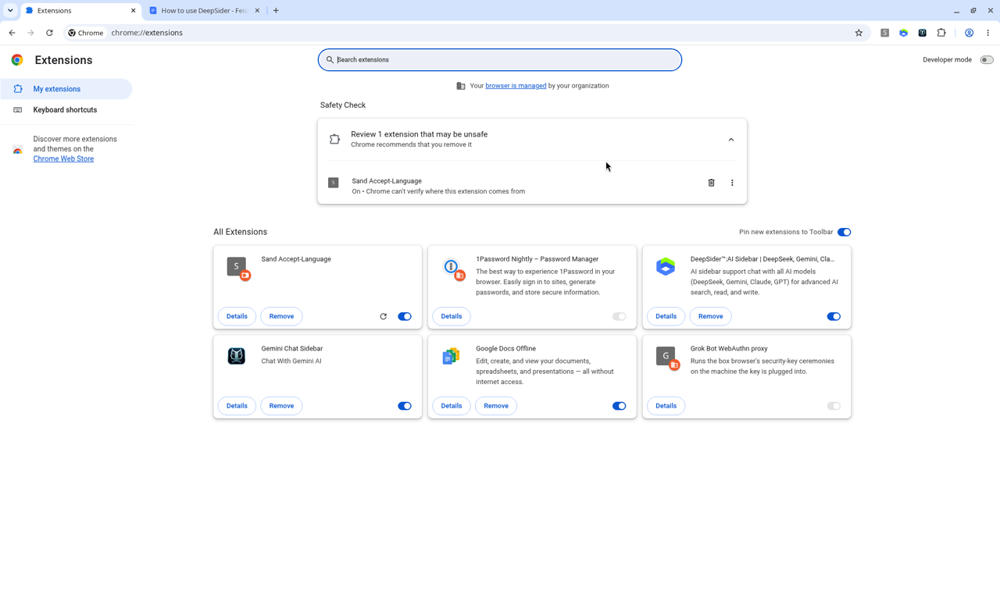

第八章 · 瀏覽器與 Extension
Gemini in Chrome、熱門側欄、Comet
Free 可讀加分路徑隱私
CASE主線仍在 gemini.google.com 做完導賞／會議；瀏覽器能力用來加速「摘要分頁／匯出」，不是取代網頁 Gemini。
內建：Gemini in Chrome（不是商店 extension）
- 側欄摘要、Ask about this tab 等
- Auto browse 等多為 Pro／Ultra，且有地區限制 → Free 主線可能不可用
Auto browse 等進階瀏覽＝Paid／之後補；本課不要求 Free 跟做
熱門商店擴充（用途＋隱私）
| 名稱 | 用途 | 提醒 |
|---|---|---|
| Sider／DeepSider | 側欄多模型（可含 Gemini） | 對話可能經第三方 |
| Monica | 側欄寫作／助理 | 看權限與隱私政策 |
| AITOPIA | 多 AI 彙整 | 勿貼機密 |
| Gemini Chat Sidebar 類 | 專注 Gemini 側欄 | 確認開發者 |
| Notebook 匯入／Jetpack 類 | 網頁→Gemini Notebook | 地區與改名 |
| AI Exporter 類 | 匯出 Gemini 對話 | 是否上傳外站 |
安裝前閱讀權限（讀所有網站？改頁面？）。不教破解、不繞付費牆、不盜用 API。
Comet＝Chromium＋可裝 Chrome 擴充
使用者本機 Comet 曾核實與 AI 相關（摘要）：Comet／comet-agent 內建、DeepSider™、NotebookLM Web Importer／Jetpack、YouTube→Notebook 類、AI Exporter、GAS AI Companion、Manus AI Browser Operator、AI Selection Assistant、Retriever AI、Nanobrowser、iGenflow 等。
對照：內建 Gemini in Chrome vs 第三方 sidebar——前者走 Google 帳號生態；後者常經第三方，隱私模型不同。

C8Q1
本課對瀏覽器 extension 的定位是？
C8Q2
Gemini in Chrome 比較正確的描述是？